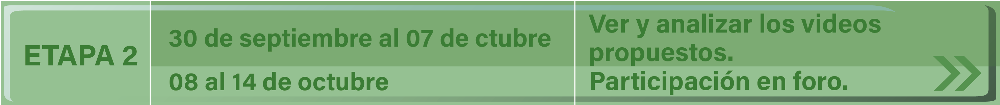
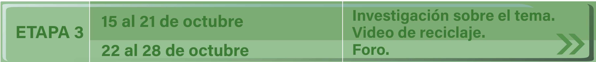
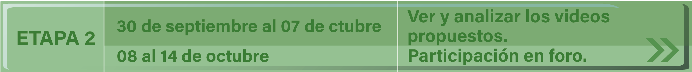
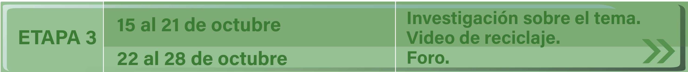
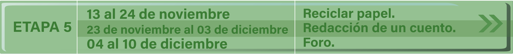
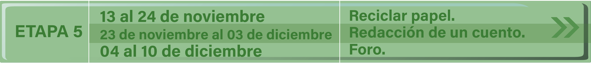

Inicio
En esta experiencia que apenas inicia se puede decir que la educación actual contempla una nueva forma de llegar al aprendizaje, desde la propia perspectiva que estamos viviendo haciendo uso de los medios electrónicos que permiten la comunicación de los alumnos y profesores a grandes distancias y que fortalece los esfuerzos educativos, para que los maestros conduzcan a los alumnos hacia el aprendizaje en el que ellos participen a través del trabajo en equipo, la investigación, el intercambio de experiencias y opiniones que forman el marco contextual en el que los alumnos llegarán a construir conocimientos de calidad.
El desarrollo del proyecto deberá enmarcarse en la utilización de diferentes tecnologías que proporcionan información diversa: documentos, consulta con expertos, proyección de videos, búsquedas en internet, experiencias a través del correo electrónico y foros de discusión.
De los trabajos elaborados por los participantes.
- Deberán desarrollar cada una de las actividades de cada etapa fundamentando sus mensajes de acuerdo a fuentes consultadas.
- Sus aportaciones finales deberán ser creaciones de los alumnos y enviarse dentro del tiempo programado para esa etapa.
Inicio
En esta experiencia que apenas inicia se puede decir que la educación actual contempla una nueva forma de llegar al aprendizaje, desde la propia perspectiva que estamos viviendo haciendo uso de los medios electrónicos que permiten la comunicación de los alumnos y profesores a grandes distancias y que fortalece los esfuerzos educativos, para que los maestros conduzcan a los alumnos hacia el aprendizaje en el que ellos participen a través del trabajo en equipo, la investigación, el intercambio de experiencias y opiniones que forman el marco contextual en el que los alumnos llegarán a construir conocimientos de calidad.
El desarrollo del proyecto deberá enmarcarse en la utilización de diferentes tecnologías que proporcionan información diversa: documentos, consulta con expertos, proyecciones de videos, búsqueda en internet, experiencias a través del correo electrónico y foros de discusión.
De los trabajos elaborados por los participantes.
- Deberán desarrollar cada una de las actividades de cada etapa fundamentando sus mensajes de acuerdo a fuentes consultadas.
- Sus aportaciones finales deberán ser creaciones de los alumnos y enviarse dentro del tiempo programado para esa etapa.
Presentación
El proyecto “Conociendo la basura” invita a todos los maestros con sus alumnos, de tercero a sexto grado de educación primaria, a participar en la realización de actividades muy interesantes que les permitirán conocer diversos aspectos de este tema.
El alumno, guiado por su maestro, podrá aportar sus opiniones, las cuales serán conocidas por todos los participantes a través de foros de discusión y la elaboración de un blog del proyecto.
Para el desarrollo de este proyecto, se requiere en forma imprescindible de la valiosa cooperación de los profesores de grupo, del responsable tecnológico escolar (RTE) así como de la participación de quienes realizarán las actividades directamente: los alumnos.
Durante el desarrollo del proyecto podrán establecer comunicación con el departamento de tecnología educativa para resolver dudas e inquietudes, por medio del correo electrónico: basura@sin.nuevaescuela.mx.
Actividades
Durante el desarrollo del proyecto el alumno realizará una gama de actividades que lo llevarán a lograr los propósitos antes mencionados.
A continuación algunas actividades a realizar durante el proyecto:
- La transmisión de los videos “El monstruo de la basura”, "Una aventura para salvar el planeta" y “ ¿Por qué el reciclaje es tan importante?”.
- Separar basura en el centro educativo.
- Visitar un centro de acopio de materiales para reciclar.
- Elaborar un papel reciclado.
- Realizar búsquedas en Internet que le servirán para formarse una idea general acerca de la basura.
- Elaborar un cuento relacionado con el tema del proyecto.
- Publicar evidencias de las actividades en un blog...
Ubicación curricular
Ciencias Naturales
Tercer grado
Eje.
Sistemas
Tema.
Ecosistemas
Aprendizaje esperado.
Identifica el aire, agua y suelo como recursos indispensables para los seres vivos.
Bloque II. Tema 3
La importancia del cuidado del ambiente
Cuarto grado
Eje.
Sistemas
Tema.
Ecosistemas
Aprendizaje esperado.
Reconoce algunas causas y efectos de la contaminación del agua, aire y suelo.
Bloque II. Tema 3
Estabilidad del ecosistema y acciones para su mantenimiento.
Quinto grado
Eje.
Sistemas
Tema.
Ecosistemas
Aprendizaje esperado.
Describe las características de un ecosistema y las transformaciones provocadas por las actividades humanas en su dinámica.
Bloque II. Tema 2
Características generales de los ecosistemas y su provechamiento
Bloque II. Tema 3
Prioridades ambientales
Sexto grado
Eje.
Sistemas
Tema.
Ecosistemas
Aprendizaje esperado.
Argumenta la importancia de evitar la contaminación y deterioro de los ecosistemas.
Bloque II. Tema 3.
Relación de la contaminación del aire con el calentamiento global y el cambio climático
Español
Tercer grado
Ámbito.
Participación social
Prácticas sociales del lenguaje.
Participación y difusión de información en la comunidad escolar
Aprendizaje esperado.
Recopila información de distintas fuentes (orales o escritas) para preparar una presentación sobre algunas características del lugar donde vive.
Bloque III.
Difundir noticias sobre sucesos en la comunidad
Cuarto grado
Ámbito.
Participación social
Prácticas sociales del lenguaje.
Participación y difusión de información en la comunidad escolar
Aprendizaje esperado.
Elabora notas informativas sobre los sucesos más importantes de su comunidad, colonia o escuela.
Bloque I.
Exponer un tema de interés
Quinto grado
Ámbito.
Estudio
Prácticas sociales del lenguaje.
Intercambio de experiencias de lectura, Intercambio oral de experiencias y nuevos conocimientos, Intercambio escrito de nuevos conocimientos.
Aprendizaje esperado.
Elabora reseñas de materiales audiovisuales, Presenta una exposición relacionada con algún descubrimiento científico o algún invento.
Ámbito.
Literatura
Prácticas sociales del lenguaje.
Lectura, escritura y escenificación de obras teatrales.
Aprendizaje esperado.
Escenifica pequeñas obras teatrales para niños y jóvenes.
Bloque II.
Buscar información de diversas fuentes para escribir un texto expositivo.
Bloque III.
Organizar información en textos expositivos.
Bloque IV.
Escribir artículos de divulgación para su difusión. Escribir una obra de teatro con personajes de textos narrativos.
Sexto grado
Ámbito.
Estudio
Prácticas sociales del lenguaje.
Intercambio de experiencias de lectura, Intercambio oral de experiencias y nuevos conocimientos, Intercambio escrito de nuevos conocimientos.
Aprendizaje esperado.
Elabora reseñas de materiales audiovisuales, Presenta una exposición relacionada con algún descubrimiento científico o algún invento.
Bloque I.
Exponer un tema de interés
Ámbito.
Literatura
Prácticas sociales del lenguaje.
Lectura, escritura y escenificación de obras teatrales.
Aprendizaje esperado.
Escenifica pequeñas obras teatrales para niños y jóvenes.
Bloque II.
Escribir un reportaje sobre tu localidad.
Bloque III.
Adaptar un cuento como obra de teatro
- Libro APRENDIZAJES CLAVE PARA LA EDUCACIÓN INTEGRAL. Primaria 3° a 6° grado.
- Libro de Ciencias Naturales del alumno. Primaria de 3° a 6° grado.
- Libro de Español del alumno. Primaria 3° a 6° grado
Calendario

 



 


Actividad "Fase 0"
Fecha: del 15 de febrero al 01 de marzo
En esta etapa el profesor conoce el proyecto, platica con sus alumnos y juntos deciden su participación y llenado del formato de inscripción.
Revisa y prueba el buen funcionamiento de las tecnologías, se familiariza con el manejo del equipo computacional en cuanto a uso de procesador de textos, correo electrónico, blog, foros.
Él y sus alumnos se responsabilizan asumiendo el compromiso de participar en el proyecto.
Se sugiere que la inscripción sea grupal y posteriormente se organice en equipos.
Se sugiere que el profesor responsable del aula de medios cree un blog para ir subiendo los productos/evidencias de las actividades realizadas por el grupo.
Actividad "Fase 1"
Fecha: del 02 al 08 de marzo
En este momento corresponde al profesor organizar a los alumnos. El docente tiene la libertad para decidir qué dinámica seguirán para que participe todo el grupo.
De igual manera será la forma de distribución de los alumnos para el desarrollo de las actividades. Se aconseja la organización por equipos.
Elaborar un blog para publicar las evidencias generadas en cada fase del proyecto. **Hipervínculo a la parte del blog
Recomendaciones:
- Tomar en cuenta los tiempos que se requieren para desarrollar las actividades propias de cada etapa del proyecto, vinculadas con las actividades de los planes y programas de estudio.
- Destinar horarios para asistir al aula de medios a revisar el correo electrónico, recibir y enviar mensajes, ver y analizar los videos.
- Que los alumnos elaboren y envÍen al foro un mensaje de presentación hacia los demás integrantes del grupo en el que se incluyen comentarios del grupo sobre:
- ¿Qué significado tiene para ustedes la palabra basura? (enlace al foro)
Actividad "Fase 2"
Fecha: del 09 al 15 de marzo
El profesor orientará a los alumnos para que conozcan los videos
”El monstruo de la basura”, y "Una aventura para salvar el planeta".
Los alumnos conocerán los videos y los analizarán en equipos tomando en cuenta los siguientes cuestionamientos:
- ¿Cuáles son los personajes principales de la historia?
- ¿Cuál es el problema que se refleja en cada video?
- ¿Cuáles fueron las causas que ocasionaron este problema?
- ¿Qué se puede hacer para solucionarlo?
- ¿Qué mensaje nos dejó cada video?
- ¿En que son semejantes los videos?
Fecha: del 16 al 22 de marzo
Cada equipo comentará la información rescatada y elaborarán grupalmente un texto que involucre los puntos tratados en las interrogantes pero sin contestar cada pregunta, enviando su mensaje al Foro de comentarios de videos sobre la basura.
Actividad "Fase 3"
Fecha: del 23 de marzo al 29 de marzo
En esta etapa el grupo organizado en equipos obtendrá información sobre algunas cuestiones como:
- ¿Qué es la basura?
- ¿Cuál es el origen de la basura?
- ¿Qué ocasiona la basura?
- ¿Qué es basura orgánica e inorgánica?
- ¿Qué encontramos en la bolsa de basura?
- ¿Qué es el reciclaje?
- ¿Qué es el reciclaje?
- ¿Tu localidad tiene lugares en que se reciclen materiales?
- ¿Conoces algún lugar de tu localidad en que se compre algún material para posteriormente reciclarlo?
En Internet se sugiere consultar las siguientes direcciónes, en donde dicha información puede ser investigada por equipos:
- Basura orgánica e inorgánica: qué es y ejemplos - Resumen
- LA BASURA
- Basura: qué es, definición, clasificación, manejo y ejemplos
- Educación y sustentabilidad: proponen usar cáscaras de cítricos para reducir basura | Argentina.gob.ar
- Cómo recoger basura puede provocar una acción global - EcoPortal.net
- Clasificar basura: organiza los desechos y cuida el medio ambiente | Yo lo puedo hacer
Se recomienda observar el video
“¿Por qué el reciclaje es tan importante?”
El profesor organizará un debate entre los equipos con el tema Importancia de la separación de la basura.Cada equipo elaborará un resumen del resultado del debate.
fecha: del 30 de marzo al 26 de abril
Los alumnos compartirán con sus compañeros del proyecto sus investigaciones utilizando un Foro de Discusión.
¿Qué importancia tiene la separación de la basura?
Actividad "Fase 4"
Fecha: del 27 de abril al 03 de mayo
Los alumnos constituidos en guardianes de la limpieza, realizan la campaña "Separemos la basura", en esta campaña gestionan, con la ayuda de toda la comunidad escolar, el colocar en la escuela botes para depositar en forma separada la basura orgánica e inorgánica.
El profesor, directivos y padres de familia coordinarán a los alumnos para que realicen la actividad de separar la basura en orgánica e inorgánica y visitar algunos lugares donde reciben estos materiales para reciclarlos.
Las evidencias de esta actividad deberán subirlas al blog del proyecto.
Fecha: del 04 al 11 de mayo
Los alumnos participarán en el foro
"Problemas localizados en la comunidad y soluciones que puedan aplicarse"
Actividad "Fase 5"
Fecha: del 12 al 18 de mayo
El profesor guiará a sus alumnos para elaborar un reciclado de papel.
Se sugiere el video:
Otros videos sobre reciclado de papel:
También se puede pedir a los alumnos que en equipos utilicen materiales de deshecho y con ellos elaborar una diversidad de objetos entre los que puede encontrarse lapiceros, portarretratos, diversidad de juguetes.
fecha: del 19 al 25 de mayo
Como una aportación final cada grupo participante elaborará un cuento donde el tema central sea la basura y dentro de este cuento se dé solución a la problemática planteada. La extensión será libre.
Los alumnos que así lo deseen podrán enviar otro tipo de aportaciones (rimas, adivinanzas, canciones) relacionadas con el tema de la basura.
Fecha del 26 de mayo al 01 de junio
Los alumnos podrán compartir sus conclusiones en el foro.
Cuentos, Rimas y Canciones.
Cada grupo participante hará una exposición de los trabajos realizados durante el proyecto dirigido a la comunidad escolar.
Se sugiere que los alumnos representen teatralmente los cuentos elaborados, esta presentación se haga ante la comunidad escolar y ante autoridades del H. Ayuntamiento, contando con responsables de áreas como lo son del área de sanidad.
Actividades
Dar clic en la imagen para descargar el archivo

Foros
Favor de ingresar al sigueinte enlace:
Blogs

El profesor de grupo o el responsable tecnológico escolar construye un blog para llevar el seguimiento del proyecto.
El siguiente video presenta un tutorial para quienes no están familiarizados con el desarrollo de un blog:
Una vez creado el blog deberá compartir el enlace en el foro.
Ejemplo: "Somos los recicladores...nuestro blog es: http://recicladores.blogger.com"
El blog deberá contener imágenes y evidencias que den cuenta del trabajo que los integrantes están realizando.
Para el período de la etapa final del proyecto y en este mismo espacio podremos conocer los blogs que desarrollaron todos los participantes.
Bienvenido

Conociendo la Basura
Proyectos colaborativos
¡Atrévete a guiar a tus alumnos en esta nueva aventura!
Aprenderán sobre:
La procedencia y el destino de los desechos
El ambiente y su protección
La basura orgánica e inorgánica